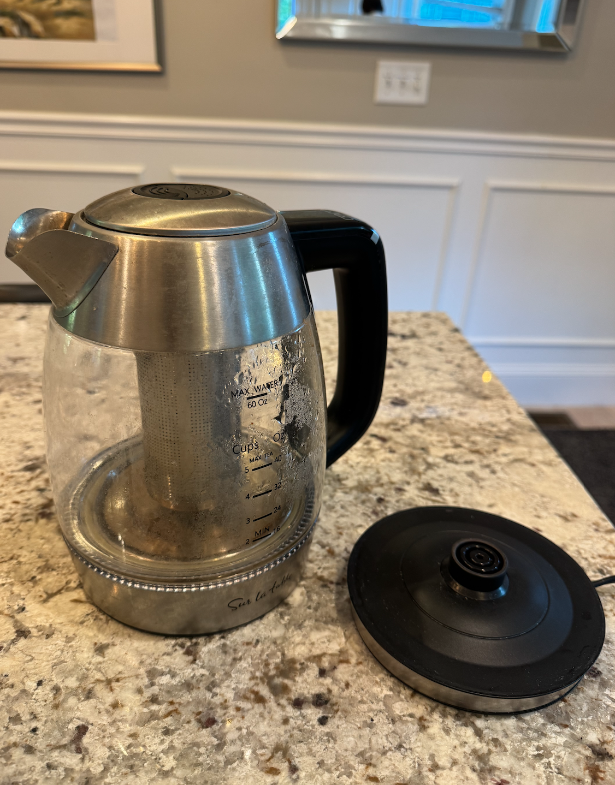

Part 1: Meaningful Object Brainstorm
Object Elaboration Table
| Object Image (Click to enlarge) | Object Description | Object Meaning |
|---|---|---|
|
 Pillow Pet |
|
|
|
Apple Watch |
|
|
|
Tea Kettle |
|
|
Design Decision: Pros & Cons
| Object | Design Pros | Design Cons |
|---|---|---|
| Pillow Pet |
|
|
| Apple Watch |
|
|
| Tea Kettle |
|
|
Part 2: Redesign Proposal
Idea Proposal: Spice-Infusing Kettle with Insertable Spice Chips
The redesigned object is a Spice-Infusing Kettle that elevates the chai ritual by blending convenience, personalization, and cultural symbolism. Rather than simply boiling water, this kettle allows users to insert spice tokens that play a key role in making chai into slots. When a button is pushed to boil waiter, it automatically infuses the selected spices and create a personalized chai. A coin-slit mechanism at the top of the kettle allows you to insert any chosen spice tokens, emphasizing the personalization of only choosing tokens that you want used. This reduces the time consuming and tedious nature of having to measure out specific ingredients and filtering the beverage.
Kettle designs originated in the Victorian Era with kettles used to heat large amounts of water, but teakettles serving as a smaller, more decorative object that often had a small oil burner to maintain the heat of the water so that when the water was added to the teapot it was hot. Specific materials of kettle have changed from cast iron, copper, stainless steel, Bakelite plastic, ceramic, and glass, all for different aesthetic and functional purposes. Through the evolution of its design, kettles have always had to contain water without the water escaping through, yet strong enough so that the water pressure does not break the container. Most importantly, it must withstand high temperatures. Environmental analysis has also shown that stainless steel kettles have stronger durability and lower impact than plastic models. Kettles often use alloys like Nichrome to heat liquid and use plastic on lids and handles for insulation.
This fictional object merges multiple functions (boiler + spices + infusion system) into one. The playful interaction of choosing and inserting tokens provokes wonder and customization. Users can gain experiences of personalization, creativity, while staying convenient. However, those who deeply value the labor and hands-on process of traditional chai-making may feel excluded. Real values stay consistent with traditional chai making, like tradition, hospitality, cultural identity, and connection. However, some added real values with the redesign include modernization of a loved ritual and convenience. Fictional values include expression and a more playful magic tone. The aesthetic factor of a sleek and minimal design with traditional Indian pattern accents reinforces function while also inviting conversation about ritual and transformation. The design also has a collection of spice chips with vibrant warm tones that correspond to differing flavor profiles.
This object will be designed for individuals who make chai routinely but want more customization (as opposed to a pre-made spiced mix) and convenience. It will take the form of a modern and sleek kettle body, like electric kettles, with visible coin-slots for spice chips. The stainless-steel top and bottom has traditional patterned motifs, a glass body for viewing, reusable plastic chips, a colored plastic handles and a power button. The purpose is to transform plain water into a warm, individualized spiced chai, while reducing time and effort overall. It emphasizes convenience and tradition coexisting in a ritualistic process. The object will exist primarily in kitchens so it can act as a conversation piece in households.
References
- Meech, Christina. (2005). Materials in the design of Kettles. Science Progress, 88, 229–236. https://doi.org/10.3184/003685005783238390
- Gallego Schmid, A., Jeswani, H., Fernandez Mendoza, J. M., & Azapagic, A. (2018). Life cycle environmental evaluation of kettles: Recommendations for the development of eco-design regulations in the European Union. Science of the Total Environment, 625. https://doi.org/10.1016/j.scitotenv.2017.12.262
- Workstory. (n.d.). Kettle manufacturing case study. Retrieved from https://workstory.s3.amazonaws.com/assets/1092469/Kettle_Manufacturing_Case_Study_.pdf
Prototype Sketches (No Redesign)

Prototype Sketches (Redesign)
Part 3: Object Attribute Grid
| Audience | Families and individuals who prepare chai as part of a daily ritual but value time saving + convenience |
|---|---|
| Form | Modern kettle design with coin slots to insert spice chips |
| Material | Stainless steel bottom and top with patterned traditional design, glass body for viewing, reusable colored spice plastic chips, plastic colored handle, control button, warm color tones |
| Appeal | Sleek but cultural design, fun customization, convenience of only having to insert chips as spices |
| Purpose | Transforming plain water into a warm personalized spice drink, all while reducing time and effort of making chai |
| Message | Convenience and tradition can coexist in a ritualistic process |
| Location | Kept in kitchen and can be used as a conversation piece over ritual of chai making |
| Usability | Intuitive design where user can insert chips, press a button to boil and get infused tea in a convenient manner |
| Technique | Paper prototype with a cylindrical body (clear plastic sheet), solid bottom top foundation, flap slots at top, and power control button/switch (can push) |
Recognition of AI Use
Portions of this project made use of AI tools for transcription and organization of notes into clear sentences. No AI assistance was used in the creation of the visual design, artwork, or conceptual development; all creative decisions and outputs are entirely original.